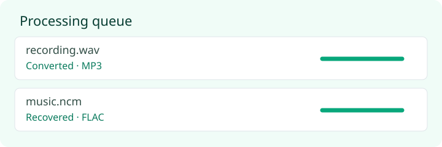
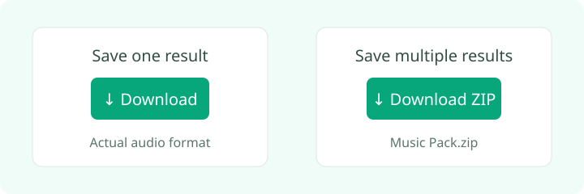

ZhuanMP3 · How to use
How to convert audio: choose, process and download
Choose files, wait for processing, then preview and download. No sign-up required.
1. Choose audio on your device
Open the audio converter and choose or drop files. Each file must be no larger than 100 MiB. Ordinary audio conversion supports up to 20 minutes per file. Changing an extension alone does not convert a file.
2. Wait for the queue

Ordinary audio your browser can decode is encoded as 192 kbps MP3. Existing MP3 files are kept as-is after validation. Special formats attempt to recover the original encoding: the result is not necessarily MP3. An extension hint is not a confirmed codec. Keep the page open and work in smaller batches to reduce memory pressure.
3. Preview and save

Preview a successful result, then click its Download link. Download ZIP saves multiple results as Music Pack.zip. ZIP output above 150 MiB must be downloaded individually or in smaller batches. Only a successful ZIP download triggers the optional support window. Close it with Not now; no payment is required. Individual downloads do not open the support window.
Three typical tasks
Play an OGG in an older player
Choose the OGG, wait for Converted · MP3, then test it in your target player. Browser codec support varies. Re-encoding does not improve the source quality.
Make a portable copy of a FLAC recording
Keep the lossless original and create an MP3 playback copy. MP3 is lossy; converting it back to FLAC cannot restore discarded information.
Open a supported NCM or QMC file
Choose a file you are authorized to process and check whether recovery succeeds. Use a player that supports the resulting format. If it is FLAC, it stays FLAC. Versions requiring extra keys are not supported; the tool does not ask for account credentials or keys.
If processing fails
- Check size and duration limits; try one file and close other memory-heavy tabs.
- Try a current Chrome, Edge, Firefox or Safari. WMA, APE, AIFF and DFF may not decode.
- Files may be truncated, damaged or from an unsupported version. An ambiguous error is not a confirmed diagnosis.
- Check the actual output format and your player's codec support.
For help, email the details listed on the Contact page. You do not need to send the music itself.